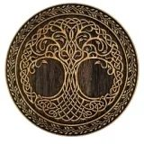
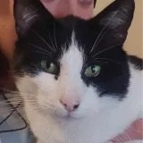
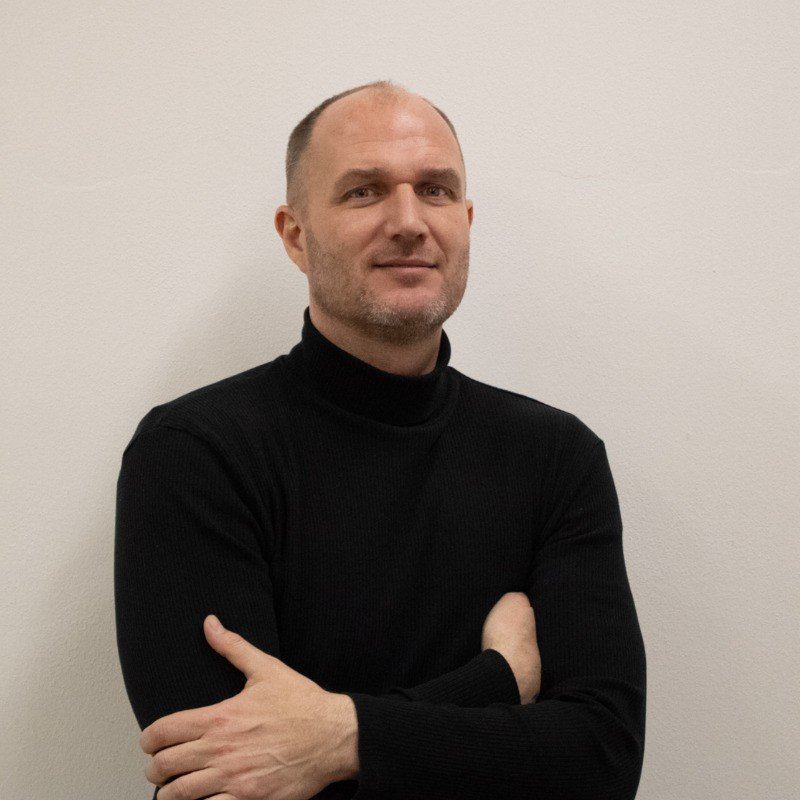
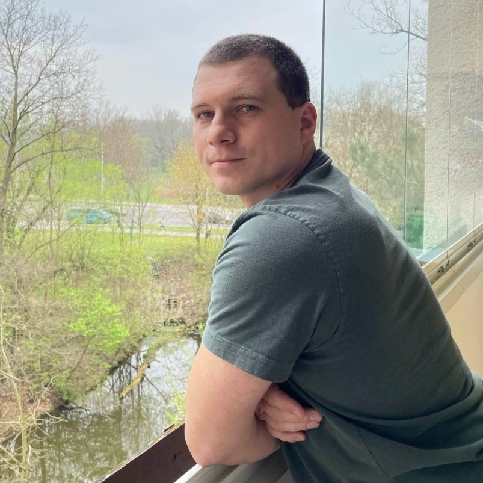

Tvoje programovací parta
Začátečníci, kteří to myslí vážně. Profesionálové s chutí pomáhat. V klubu svoje dovednosti s kódem nebo hledání práce posuneš o 1 % každý den.
- 244 členů klubu
- 41% jsou ženy
- 59 záznamů přednášek
- 5 let komunity


Získej parťáky, mentory, kamarády
Začátečníci potřebují víc než příručku. Nejvíc je posune, když v tom všem nejsou sami. Když jim někdo může pomoci se zapeklitou situací, dát zpětnou vazbu, dodat motivaci.
Jsme online komunita na Discordu. Občas pořádáme přednášky, ale nejsme škola, neděláme kurzy. Sdílíme si tipy a postřehy. Podporujeme se a radíme, když někomu něco nejde, ať už jde o seniora nebo juniora. Dáváme si zpětnou vazbu. Dohazujeme si práci. Společně se radujeme z úspěchů. Můžeš se aktivně zapojit, nebo vše jen potichu sledovat.
- Každý měsíc přednáška
- 59 videozáznamů akcí
- Pracovní nabídky
- Kariérní konzultace
- Zpětná vazba na CV
- Zpětná vazba na kód
- Recenze a zkušenosti
- Podpora a pochopení
- Komunita, síť kontaktů
- Mentoring od profíků
- Slevy a soutěže
- Podporuješ junior.guru

Jemně popostrkující a nějakou činnost vyvolávající a podněcující síla, kterou jsem potřebovala. Nacpat se sem byl moc dobrej napád.

Jako kluka z vesnice mě na programování vždy štvalo, že jsem na to byl hrozně moc sám. Jsem opravdu vděčný za tuto komunitu.
Na webech, které jsem vytvořil, jsem nasekal tolik chyb. Nebýt junior.guru a skvělých lidí, kteří tam pomáhají, nepřišel bych na ně.
Môj obľúbený kanál na junior.guru je #práce-inzeráty, kde sú na jednom mieste všetky IT pozície vhodné pre juniorov a naviac aj ručne vložené od členov komunity. ‚Single Source of Truth‘, ktorý junior potrebuje, keď si hľadá prácu 👍
Nakoukla jsem kvůli recenzím, ale našla jsem i mnoho jiného. Hodně mě to nakoplo k učení. Od kurzů prozatím upouštím, raději se učím vlastním tempem a v čase, který mi vyhovuje. Jsem tu jen pár dní a hodně jste mi pomohli se zorientovat.

Hromada materiálů 👍 Zbloudilá duše se může zeptat na cestu, tipy a triky 👍 Může se pochlubit, postěžovat si, zafňukat 😅 Naprosto super!
Jaká témata zajímají členy klubu
Chceš mít jistotu, že v klubu najdeš lidi, které zajímá totéž co tebe? Že najdeš publikum pro svůj dotaz nebo parťáky pro svůj projekt? Podívej se, co o svých zájmech prozradili sami členové.
-
 webový frontend
115 členů
webový frontend
115 členů
-
 JavaScript
114 členů
JavaScript
114 členů
-
 servery a infra
112 členů
servery a infra
112 členů
-
 Python
112 členů
Python
112 členů
-
 data
94 členů
data
94 členů
-
 bezpečnost
85 členů
bezpečnost
85 členů
-
 testování
77 členů
testování
77 členů
-
 mobilní appky
51 členů
mobilní appky
51 členů
-
 Java
37 členů
Java
37 členů
-
 C# a .NET
36 členů
C# a .NET
36 členů
-
 vývoj her
36 členů
vývoj her
36 členů
-
 matika a algoritmy
31 členů
matika a algoritmy
31 členů
V klubu se ale diskutuje o všem, co souvisí co se světem juniorů. Tady máš seřazený seznam toho, co lidi v klubu za poslední půlrok nejvíc řeší.
- AI v IT horké téma
- kariéra a pohovory horké téma
- CV, GitHub, LinkedIn
- projekty
- zdraví mysli i těla
- nástroje a materiály
Užívej si přednášky pro začátečníky
Jednou za měsíc máme na Discordu živou online akci. Bývají večer a trvají 1 až 2h. Můžeš pokládat dotazy přes chat, nebo si to jen pustit do uší při vaření večeře. Téma i pojetí je vždy vyloženě pro začátečníky. Žádná záplava odborných „termitů“, které ti nikdo nevysvětlil!
Pokud akci nestihneš, můžeš se podívat na záznam. V archivu máme už 59 videí a všechny jsou členům kdykoliv k dispozici.

Adina Fox

Kateřina Hroníková

Jakub Beránek

Štěpán Bechynský


Daniel Srb

Petr Viktorin

Zuzana Pechová
Propoj se s lidmi z oboru
O klub se stará Honza Javorek, autor junior.guru. Okolo se však „poflakuje“ i řada dalších profíků s chutí pomáhat. Partnerství klubu s firmami a programátorskými komunitami ti rozšíří možnosti zapojit se i jinde, propojit se s potenciálními zaměstnavateli a dovědět se o zajímavých akcích, případně na ně získat slevu.


Potkáš u nás samozřejmě i stejné začátečníky, jako jsi ty. Každý s jiným životním příběhem, ale s velmi podobnými dotazy a problémy. Mnozí si v klubu píšou deníčky o cestě do IT, které ti mohou sloužit jako zdroj inspirace a motivace.
- i PHP je cesta
- Deníček switcherky
- :rocket: Vzhůru do neznáma a ještě dál...
- Z hello world k vlastním projektům
- Zahradníkův rok
- Tralala...
- 👩💻
- Život je sice těžký, ale stojí za ten boj...
Ptej se bez obav
Respektujeme se, pomáháme si, jsme k sobě laskaví a profesionální. Hloupé otázky neexistují, nemáme potřebu někoho stírat. Uslintané vtipy nikoho nezajímají, mezi členy jsou ženy, muži, staří, mladí.

Ty diskuze jsou úžasné. Když to lidi zaplatí, tak je to úplně jiné. Extrémně kultivované, srozumitelné, každý příspěvek dává smysl.

Je problém najít komunitu, která je o vzájemný pomoci a výměně informací, ne o honění ega. Tady je to krásná výjimka. Jsem ráda, že toho můžu být součástí.

Sociálne siete som už úplne vymenila za junior.guru, miesto pálenia času na kravinách sa dostávam k užitočným informáciám, yes! 💪
Díky za rady a tipy. Jsem upřímně překvapen, že jsou v klubu tak strašně fajn lidi, co se snaží pomoct. Dlouho jsem nic takového nezažil a proto ještě jednou děkuji všem, co mi radíte. Fakt super.
Šetři čas a energii. Posouvej se vpřed bez zakopávání o nezralé názory, hulváty, sexisty a přebujelá ega. Případné úlety se u nás řídí pravidly chování.
Asistentky? Nene, my máme asistenty, na tuhle pozici se holka nemůže dostat. Neuměla by otvírat pivo a zahřívat playstation
Možná by jsi měl držet hubu p*** když se tě nikdo na nic neptá č*****
Nech si radit od profíků
Vycházíme z postupu, který je založen na reálných zkušenostech a osvědčil se mnohým začátečníkům. Snažíme se však radit objektivně a brát ohled i na tvou konkrétní situaci. Než abychom tě utopili v možnostech, pomůžeme ti s rozhodováním. Poskytneme ti sice různé pohledy, ale taky jasný směr. Profíci, kteří šli do klubu, to udělali ze zájmu o juniory a s chutí pomáhat, nejsou to náhodní kolemjdoucí.
| Veřejné skupiny | Klub junior.guru | Osobní mentor |
|---|---|---|
| kvantita | dostatečná kvalita | exkluzivní kvalita |
| zdarma | dostupné | drahé |
| kolemjdoucí | komunita | osobní vztah |
| radí kdokoliv | radí angažovaní profíci | radí odborník |
| správce dobrovolník | správce na plný úvazek | na plný úvazek |
| všudypřítomné | dostupné | obtížně dostupné |
Rady kolemjdoucích ve veřejných skupinách jsou náchylné k fanouškovství, opakují nejrůznější mýty, doporučují staré postupy. Vycházejí z toho, že když něco vyhovovalo jednomu, zákonitě musí i druhému. Na jednoduchou otázku běžně dostaneš desítky rozcházejících se odpovědí, mnohdy zcela nevhodných.

Jsem rád za junior.guru. Už minulý rok nám to doporučovali na kurzu, ale tehdy jsem to ještě nedokázal docenit. Získal jsem svou vysněnou práci a skvělí lidi z klubu na tom mají svůj podíl.
Komunite Junior Guru patrí veľké ďakujem ❤️ Za podporu pri projektoch, za cenné rady a aj za povzbudenie v momentoch, keď som ho najviac potrebovala. Niekedy tam človek nenájde len riešenie problému, ale aj svojho budúceho šéfa 😉

Jakožto career switcher jsem také bojoval s hledáním práce v IT oboru. Klub měl určitě nemalý podíl na mém úspěšném nalezení práce.

Nebýt klubu, tak čert ví, jak by to se mnou bylo. Člověk si změnu zaměstnání nějak maluje, reklamy ho mastí zleva zprava medovou budoucností a najednou je to jak na horské dráze. Až díky lidem z klubu jsem obdržel pořádný reality-check, který po medu vůbec nechutnal. Poprvé jsem ale v tom širém moři možností a bájných představ získal pocit, že stojím nohama na zemi – a že to i přes to všechno stojí za to.
Klub je boží. Kolikrát mi být součástí pomohlo udržet nervy na uzdě a věřit že to dopadne! 😊
V podstatě asi není lepší předplatné pro juniory v ČR a to jsem toho už viděl dost 👍
Přidej se k nám
Zaregistruj se a nakoukni, jak to u nás vypadá. Kartu nezadáváš. Klidně si všechno nejdřív vyzkoušej. Pokud ti klub nesedne, prostě akorát po dvou týdnech nedoplníš platební údaje a systém tě automaticky odebere.
Zdarma na 14 dní
Potom 299 Kč měsíčně*
- Bez zadávání karty, bez placení
- Po 2 týdnech se rozhodneš
- I potom to jde kdykoliv zrušit
Obchodní podmínky jsou napsané lidsky, klidně si je projdi. Je to smlouva, kterou mezi sebou budeme mít. Odkazuje se na pravidla chování, tak na ně taky mrkni, ať znáš mantinely a víš kam pro pomoc. Zásady ochrany osobních údajů popisují, jaká data o tobě Honza má a jak s nimi zachází.
* Žádný háček, ani skrytá podmínka. Tohle je jen poznámka na okraj, že pokud by se ti v klubu líbilo, ale 299 Kč měsíčně je na tebe moc, můžeš požádat o roční stipendium.
Otázky?
Vrtá ti hlavou, jak přesně to celé funguje? Máš nějaké problémy s registrací nebo s Discordem? Zajímají tě veškeré detaily ohledně placení? Vypršela ti platnost karty? Prolétni si otázky a odpovědi.